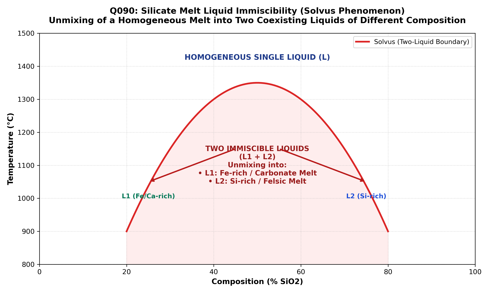
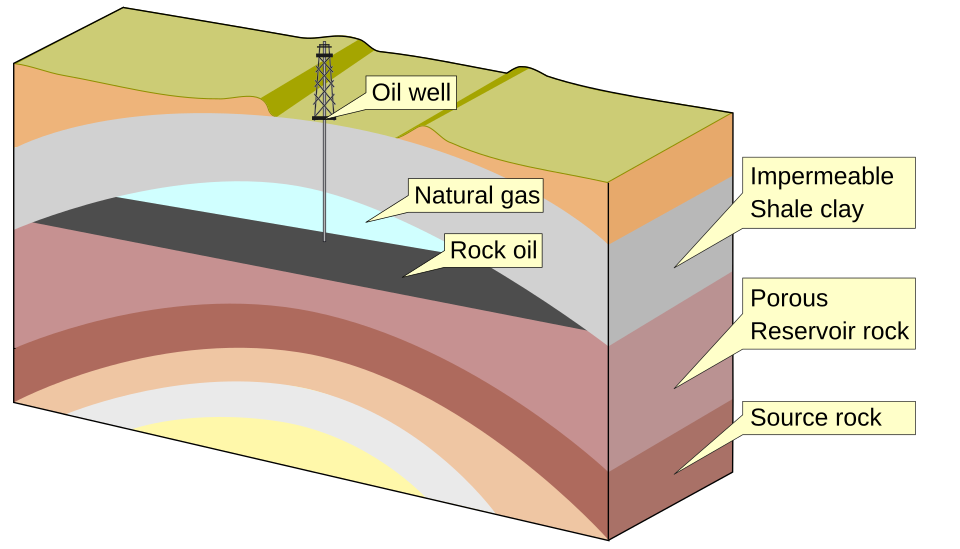
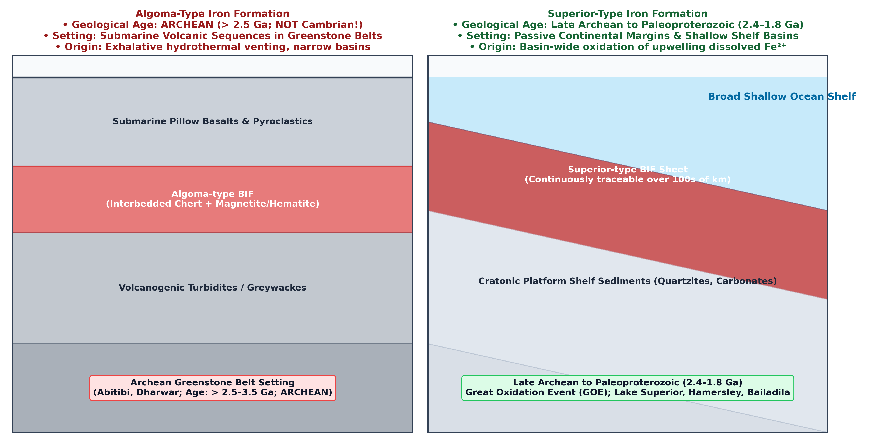
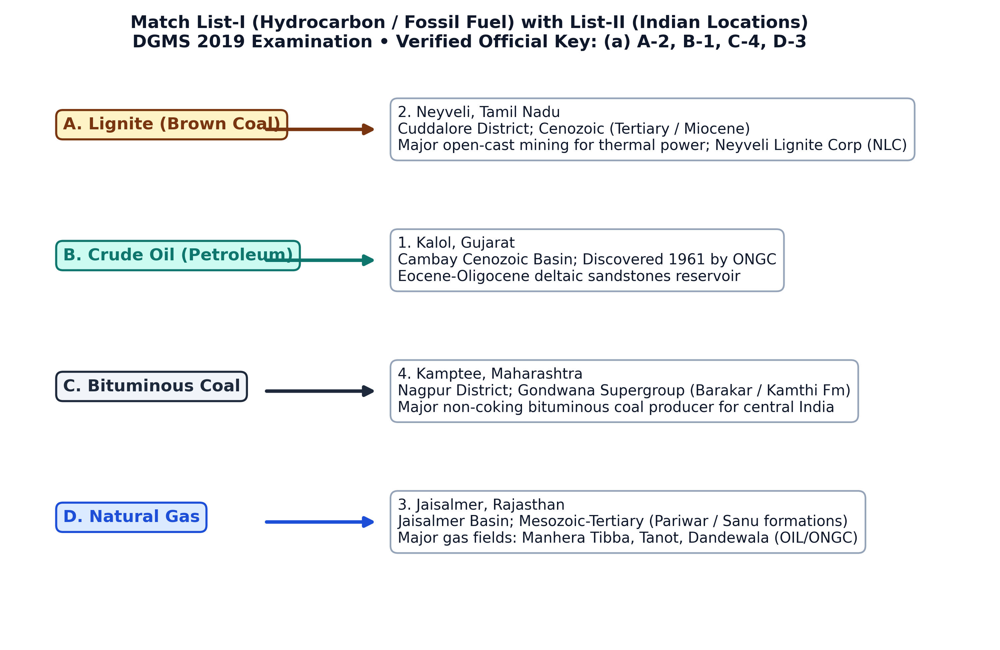

9.1 Fundamental Definitions and Classification

$$5\text{FeS}_2 + 14\text{CuSO}_4 + 12\text{H}_2\text{O} \longrightarrow 7\text{Cu}_2\text{S (Chalcocite)} + 5\text{FeSO}_4 + 12\text{H}_2\text{SO}_4$$
Ore Mineral. A mineral from which one or more metals can be extracted profitably (e.g., hematite for iron, chalcopyrite for copper). Gangue Minerals. Worthless non-metallic minerals (quartz, calcite, barite) intergrown with ore. Tenor. The metal percentage in an ore. Syngenetic Deposits form simultaneously with their enclosing host rock (e.g., sedimentary iron beds), whereas Epigenetic Deposits are introduced later into pre-existing fractures or cavities (e.g., hydrothermal veins).
9.2 Processes of Formation of Mineral Deposits



1. Magmatic Concentration. Direct crystallization from cooling magma via Early Magmatic Dissemination (diamonds in kimberlite pipes), Gravitational Segregation (chromite layers at Sukinda, Odisha), or Late Magmatic Immiscible Liquid Segregation (Ni-Cu sulfides at Sudbury).
- Goldschmidt Geochemical Classification: Siderophile (Fe, Ni, Co, Pt, Au — concentrated in Earth's core), Chalcophile (Cu, Pb, Zn, Ag, Hg, S — form sulfide ores), Lithophile (Si, Al, K, Na, Ca, Mg, REE — concentrated in crustal silicates), and Atmophile (N, O, noble gases).
- Algoma vs. Lake Superior BIFs: Algoma-type BIFs are Archaean, lenticular, and directly associated with submarine volcanic greenstone belts; Superior-type BIFs are Paleoproterozoic ($2.5\text{--}1.8\text{ Ga}$), laterally extensive across stable continental shelves, and account for the world's largest iron ore reserves.
2. Pegmatitic Deposits. Coarse-grained residual volatile-rich granitic melts ($500^\circ\text{--}700^\circ\text{C}$) yielding muscovite mica books (Kodarma, Nellore), beryl, lithium, and rare earths.
3. Contact Metasomatic (Skarn) Deposits. High-temperature gaseous replacement along igneous-limestone contacts forming calc-silicate skarns with tungsten (scheelite), iron (magnetite), and copper.
4. Hydrothermal Deposits. Deposition from hot aqueous solutions ($50^\circ\text{--}500^\circ\text{C}$) by cavity filling (veins, stockworks, saddle reefs) and metasomatic replacement. Classified by temperature/depth (Lindgren) into Hypothermal ($300^\circ\text{--}500^\circ\text{C}$, deep, e.g., Kolar gold), Mesothermal ($200^\circ\text{--}300^\circ\text{C}$, e.g., Singhbhum copper), and Epithermal ($50^\circ\text{--}200^\circ\text{C}$, shallow).
5. Sedimentary Deposits. Chemical/biochemical precipitation of Banded Iron Formations (BIF), sedimentary manganese, phosphorites, and marine evaporites (gypsum, halite).
6. Residual Concentration. Tropical chemical weathering leaches away silica and alkalis, leaving insoluble alumina/iron caps—forming Bauxite (Panchpatmali, Odisha) and lateritic iron/nickel ores.
7. Mechanical Concentration (Placer Deposits). Gravity sorting of heavy, durable minerals by rivers or waves—forming alluvial gold/cassiterite and coastal black-sand placers (monazite, ilmenite, rutile, zircon along Kerala & Odisha coasts).
8. Oxidation and Supergene Enrichment. Surface weathering oxidizes primary sulfides into a leached iron-oxide cap (Gossan), carrying dissolved copper downward below the water table to precipitate high-grade secondary sulfides (chalcocite, covellite).
9.18 Fossil Fuels: Coal and Petroleum


Coal. Formed from buried terrestrial plant debris transformed by pressure and heat along the rank series: Peat → Lignite (Neyveli) → Bituminous Coal (Gondwana fields of Jharia, Raniganj, Bokaro, Talcher, Singareni) → Anthracite. With increasing rank, moisture and volatile matter decrease while fixed carbon and calorific value increase.
Petroleum & Natural Gas. Hydrocarbons derived from marine plankton buried in organic-rich source rocks (shales) migrate upward into porous, permeable reservoir rocks (sandstone, limestone) sealed beneath an impermeable cap rock inside structural or stratigraphic Oil Traps (Anticlinal traps, Fault traps, Salt domes, Pinch-outs, Unconformity traps). Major Indian fields: Assam (Digboi, Naharkatiya), Gujarat (Ankleshwar, Cambay), and Bombay High (Mumbai Offshore).
9.27 Major Metallic & Non-Metallic Deposits of India


Iron Ore. Hematite ($70\%\text{ Fe}$) and Magnetite ($72.4\%\text{ Fe}$) in Archaean BIF belts of Odisha (Keonjhar, Sundargarh, Mayurbhanj), Jharkhand (Singhbhum/Noamundi), Chhattisgarh (Bailadila), and Karnataka (Kudremukh, Bellary-Hospet).
Manganese Ore. Pyrolusite and Psilomelane in MP (Balaghat), Maharashtra (Nagpur-Bhandara), and Odisha (Bonai-Keonjhar).
Copper, Lead & Zinc. Chalcopyrite in Singhbhum Copper Belt (Mosabani), Khetri (Rajasthan), and Malanjkhand (MP); Galena & Sphalerite at Zawar and Rampura-Agucha (Rajasthan).
Gold, Bauxite & Mica. Gold in Kolar and Hutti (Karnataka); Bauxite on Eastern Ghats plateaus (Panchpatmali, Koraput, Amarkantak); Sheet Muscovite in Bihar (Kodarma), Nellore (AP), and Rajasthan.
Chapter Review Questions (K. M. Bangar)
1. Define ore mineral, gangue, tenor, syngenetic, and epigenetic deposits. Give Lindgren's classification of hydrothermal deposits.
2. Explain the processes of magmatic segregation, contact metasomatism, residual concentration, placer deposition, and supergene enrichment.
3. Discuss the origin, rank classification, and Lower Gondwana coalfield distribution of coal in India.
4. Explain the origin, migration, and structural traps of petroleum, and name the major oilfields of India.
Visual Reference Gallery (Clean Color Diagrams & Specimens)
Supplementary full-color diagrams from Winter, Perkins, Fossen, Boggs and high-resolution USGS/Wikimedia photographs replacing scanned textbook drawings.



